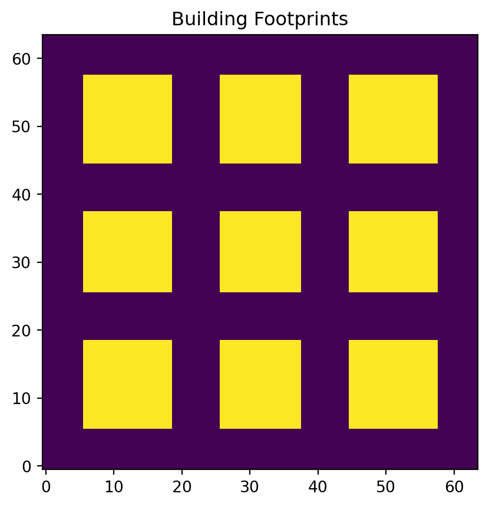

Code
from phi.torch.flow import *
from src.simulation import setup_simulation, step_simulation
from src.geometry import create_mask
import matplotlib.pyplot as plt
# Simulation parameters
res = (64, 64, 16)
domain_size = (200, 200, 50)A Differentiable CFD Analysis of Pedestrian Comfort
Modern urban planning often inadvertently creates “wind canyons”—areas where building geometry accelerates wind, leading to dangerous gusts at the pedestrian level. This project utilizes Differentiable Physics to simulate 3D wind flow and pollutant dispersion, providing a tool to optimize building layouts for pedestrian comfort.
The air flow is modeled using the 3D Incompressible Navier-Stokes equations:
\[ \rho \left( \frac{\partial \mathbf{u}}{\partial t} + \mathbf{u} \cdot \nabla \mathbf{u} \right) = -\nabla p + \mu \nabla^2 \mathbf{u} + \mathbf{f} \] \[ \nabla \cdot \mathbf{u} = 0 \]
Pollutant transport is modeled with the advection-diffusion equation:
\[ \frac{\partial c}{\partial t} + \mathbf{u} \cdot \nabla c = D \nabla^2 c + S \]
We employ a Cartesian grid, accelerated on Apple Silicon using the PyTorch backend via PhiFlow.
from phi.torch.flow import *
from src.simulation import setup_simulation, step_simulation
from src.geometry import create_mask
import matplotlib.pyplot as plt
# Simulation parameters
res = (64, 64, 16)
domain_size = (200, 200, 50)We tested four urban archetypes. Each animation displays an animated vector quiver plot showing the velocity field direction and magnitude (indicated by color, using the ‘turbo’ colormap) at the pedestrian level.
Note: Wind enters from the Left (West).
obstacle_mask = create_mask(domain_size, res, layout_type="grid")
plt.imshow(obstacle_mask.values.numpy('x,y,z')[:, :, 2].T, origin='lower')
plt.title("Building Footprints (z-slice)")
plt.show()
The simulation generates data compatible with scientific visualization tools and can be imported into Blender using Geometry Nodes for cinematic rendering. The use of Differentiable Physics allows this framework to be extended into an optimization loop to minimize pedestrian gust zones.